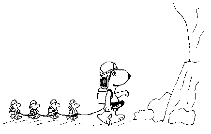

Urgent... Stop Press....
It has been drawn to our attention that the great and glorious principles of political correctness are being compromised by certain members of the climbing community, and in the terminology often used by these fringe elements. This communiqué is intended to alert the reader to some of the more flagrant breaches of our fine and commendable principles.
Deadman - this term is inherently sexist and demeaning to the deceased. We recommend that the term "Existentially-challenged person" be employed as a replacement.
"Bod" Harness - we disapprove of this unattractive reference to the physical being of the climber, as it is contrary to our belief that discrimination based on physical attractiveness is repugnant to any civilised member of society. A particularly lamentable aspect of this breach of protocol is that the offending article is marketed by a firm with the admirable name of "Black Diamond", which presents ethnic minorities in a favourable light.
Ice Screws - it is a sad reflection on today's society that the term "screw" has, as well as aquiring unpleasant sexual overtones, become a slang term for an officer of Her Majesty's Prison Service. These items should be reclassified forthwith, perhaps as "low-temperature/high moisture tubular protection"
Friend - an unacceptably flippant disregard of the fact that some members of society are socially disadvantaged; we should not draw attention to their difficulties in this way. These items should be reclassified as "socially-advantaged protection"
Alien - implicit in this term is the abhorrent concept that beings should be classified and discriminated against simply because they are unfamiliar to us. A rethink of this trademark is urgently called for.
Camalot - this name is lamentably based upon an Anglo-Saxon, white supremacist legend. This dispicable lack of concern for other creeds should be rectified forthwith. An alternative name should be selected from African, Asian or Native American culture.
Bong - this is, we believe, an unpleasant reference to an item used in the abuse of illegal substances. Drawing any attention to such unsavoury activities cannot be condoned.
Kingpin - the imperialist, male-dominated language employed here is scandalous. We advise that "Democratically-elected-matriarch-pin" would be a more acceptable term to decent members of society.
Nut - this term has, regrettably, become associated with the male procreative apparatus. Such a reference is loathsome and unacceptable to today's society. "Ergonomically-tapered protection" is a more correct alternative.
Ace - the moniker applied to this item of footwear is yet .html example of the disgracefully elitist and supremacist culture which has become apparent during the course of our work.
Dominator - all the above complaints apply once again.
Mercury - .html trademark with white, European-based mythological roots. Again, inspiration for articles such as this should be sought in African, Asian or Native American culture.
Krab - a word which is unfortunately used as a slang term for pubic lice, a situation resulting in unnecessary innuendo in everyday climbing parlance. Attention should not, however innocently, be drawn to this condition which regrettably afflicts a significant number of members of our society.
Offwidth - inherent in this revolting term is the assumption that any being should be of any given dimensions. The replacement term "Dimensionally-challenging fissure" should be introduced as a matter of priority.
Figure of Eight - .html despicable reference to the physical shape of the item in question, again with the innate assumption that one shape is inherently better than any other. We should substitute the name "twin-holed friction rope control device".

The Novice Meet: By Paul Palfreyman